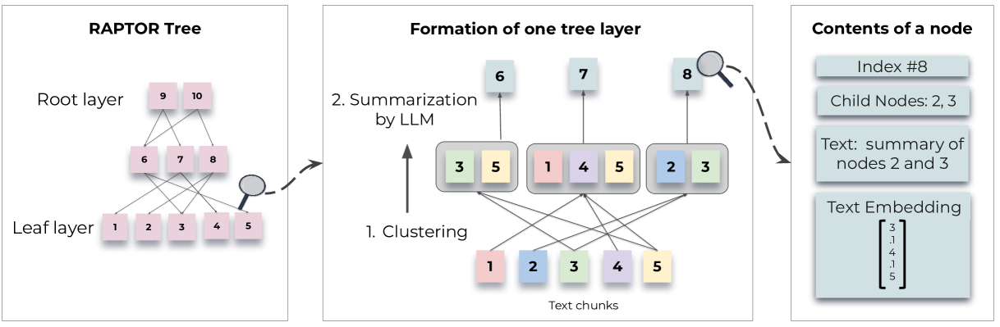
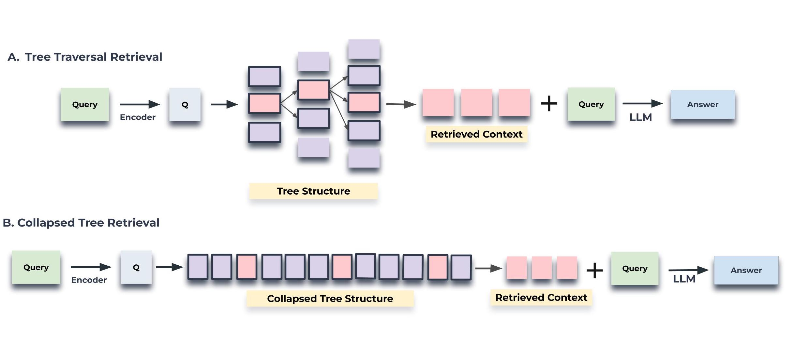
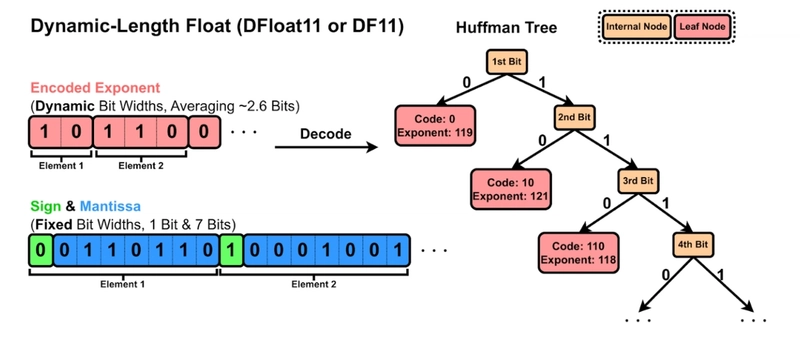

RAG RAPTOR, DFloat11 and pyrefly
the last 2 days i was doing some writing some more well crafted articles they will publish later and they were 2 amazing and hard days ..let’s go into the details. 1. RAPTOR RAG 2. DFloat 1 3. pyrefly 4. fastembed
What is RAPTOR RAG?

It’s a technique to imrpove they way you RAG above your documents and they say it will improve the performance by 20% ..but it don’t!
What is RAPTOR ? “It’s a Tree constructed from your chunks by recursively cluster chunks of text based on their vector embeddings and generates text summaries of those cluster, constructing a tree from the bottom up.”
They try to solve the problem of retrieve only a few short, contiguous text chunks, which limits their ability to represent and levevarge large-scale discourse structure. This is particularly relevant for thematic questions that require integrating knowledge from multiple parts of a text, such as understanding an entire book, as in the NarrativeQA dataset (Kočiskỳ et al., 2018).
Consider the fairy tale of Cinderella, and the question “How did Cinderella reach her happy ending?”. The top-k retrieved short contiguous texts will not contain enough context to answer the question.
They solve this by making the indexing and retrieval uses a tree structure to capture both high-level and low-level details about a text. the steps are the following: 1. cluster chunks of text 2. generates summary for those clusters and then repeats 3. generating a tree from the bottom up.
the model based summarization
After clustering the nodes using Gaussian Mixture Models, the nodes in each cluster are sent to a language model for summarization. This step allows the model to transform large chunks of text into concise, coherent summaries of the selected nodes. For our experiments, we use gpt-3.5-turbo to generate the summaries. The summarization step condenses the potentially large volume of retrieved information into a manageable size.
Querying RAPTOR
 1. Tree traversal 2. collapsed tree retreival
to undersand how they work the picture above is very clear.
what i want to say is the results are not fair and the claim of 20% is baisd. if you look at accuracy between raptor and the sbert solution you will find that it’s not much better while still very expensive to create and retrieve this if for question answering and flow of the information is very reptitive.
what is cool about RAPTOR technique is using it for summary.
having details, medium and high information for document will help you create better summary because you divide the task of generting a summary to a single LLM in one show which will not be much accurate. you know divided the task some of the summary already done and create in the vector store so the task is more easier for the final llm model.
DFloat11: Efficient, Lossless Compression for LLMs
DFloat11 (DF11) is a novel, mathematically lossless compression technique that reduces large language model (LLM) memory usage by about 30%—with zero loss in accuracy. Unlike traditional quantization, which can degrade model quality, DF11 uses Huffman coding to compress only the predictable exponent bits of model weights, preserving all original information.
How DF11 Works

- Sign and Fraction Bits: Kept unchanged, as they contain high-entropy information.
- Exponent Bits: Compressed using a precomputed Huffman tree, replacing the fixed 8-bit exponent with a variable-length code. This saves about 5 bits per weight on average.
Storage and Decoding
- Storage: The sign/fraction and exponent bits are stored separately, along with a small header for the Huffman codebook.
- Decoding: At runtime, the original weights are quickly reconstructed by combining the sign/fraction block with the decoded exponent, enabling fast, parallel processing on GPUs.
Key Benefits
- 30% reduction in model size compared to bf16
- 100% identical accuracy to the original model
- Applicable to any transformer-based LLM ## Pyrefly with vscode Pyrefly it’s a pyton type check written in Rust. they I installed into vscode and tried it with llamaindex and typercodebase it was very nice expirence.